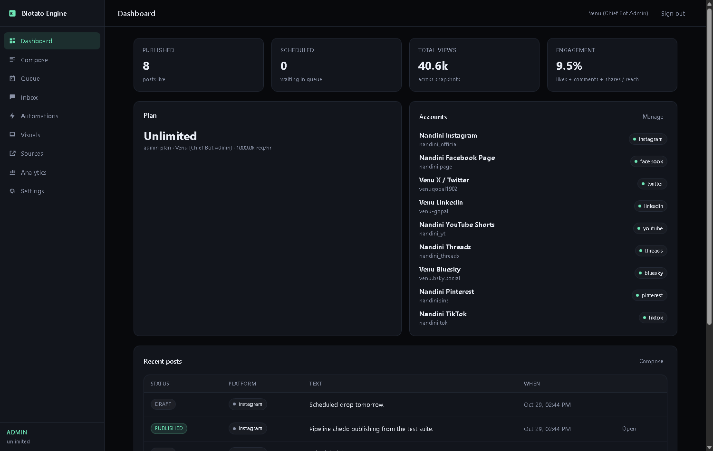
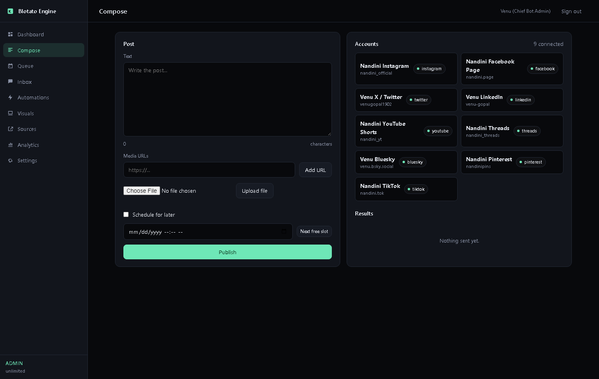
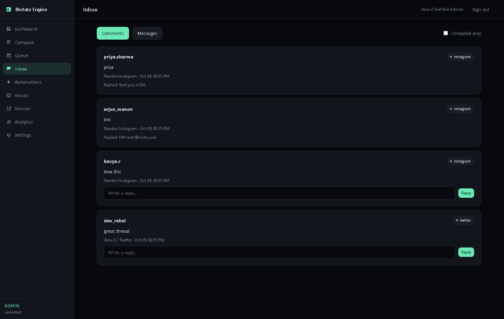
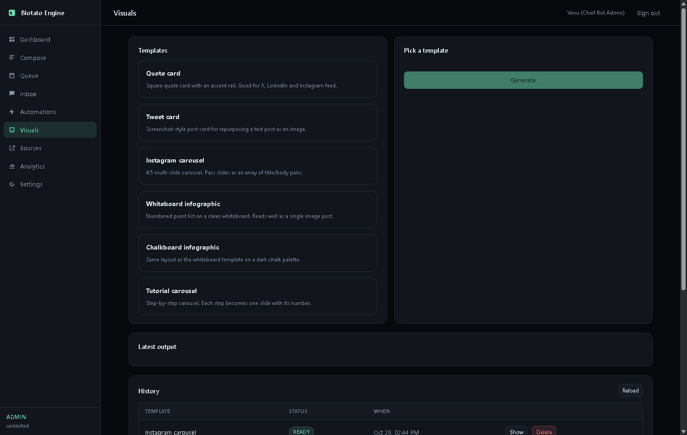
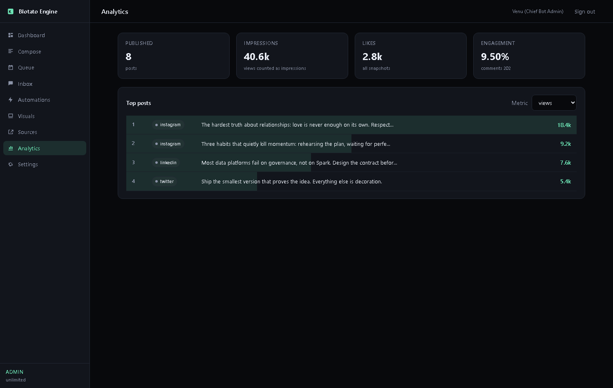

Blotato Engine
Unified social API, MCP server and full web console for 9 platforms. Self-hosted, unlimited posts, zero subscription.
Overview#
Blotato sells a unified social media API and MCP server for $29/mo. This engine reproduces the whole surface — publishing, scheduling, comments, DMs, keyword automations, analytics, visual generation and source repurposing — across 38 REST endpoints and 17 MCP tools, plus a nine-screen web console. Same request shapes, same tool names, no per-seat billing and no post caps.
What you get
- 38 REST endpoints covering every Blotato capability area
- 17 MCP tools so Claude, Cursor and Hermes drive it directly
- Nine-screen web console served from the same origin — no build step
- Nine platform connectors; the four newest talk to real platform APIs
- Background scheduler plus recurring weekly slot calendar
- Keyword DM automations with gates, webhook callbacks and run stats
- Visual renderer producing real PNGs from six templates
- Source extraction and per-platform repurposing
Publishing
One POST /v2/posts targets any connected account. The connector registry resolves the platform adapter from the account record, so adding a platform never touches client code.
Scheduling
Pass an ISO-8601 scheduledTime and the APScheduler worker dispatches within 15 seconds of the due time. Recurring weekly slots per account, plus next-free-slot resolution in the account timezone.
Comments and DMs
Read comments, reply publicly, list DM threads with unread counts, read transcripts and send outbound messages. Everything the agent needs to handle its own follow-up.
DM automations
Keyword triggers on comments or messages. On a hit the engine posts a randomized public reply, sends the DM, applies follow or email gates, and fires your webhook. Meta's callback shape is handled at /webhooks/meta.
Analytics
Snapshot history per post, aggregate totals, engagement rate, and top-post ranking by views, likes, comments, shares, saves or reach.
Visuals
Six templates render actual PNGs with Pillow: quote cards, tweet cards, 4:5 carousels, whiteboard and chalkboard infographics, and tutorial carousels. Outputs are served back as public URLs.
Sources
Feed it a YouTube link, article, PDF, X post or raw text. It extracts the content and repurposes it into platform-shaped drafts ready for the composer.
Web console
A nine-screen dashboard: overview, composer with fan-out publishing, queue and slot calendar, inbox, automations, visual studio, sources, analytics and settings. Vanilla JS, one file, no build step.
Interface#
The console is served at / from the same process as the API, so there is nothing to deploy separately. It authenticates with the same API key and keeps it in browser storage.





Install#
From a clean machine to a running server in four commands.
Requirements
- Python 3.12
- uv package manager (pip also works, uv is faster)
- Git
Step 1 · Clone the repository
Grab the monorepo and move into the service directory.
git clone https://github.com/venugopal1902/replicas.git
cd replicas/services/blotato-engineStep 2 · Install dependencies
uv reads pyproject.toml and creates an isolated virtual environment.
uv sync --python 3.12Step 3 · Verify the build
Runs the full end-to-end suite against a fresh database. 52 checks must pass.
uv run python tests/test_engine.pyStep 4 · Start the server
Binds to port 8400. The database, nine seed accounts and demo data are created on first boot.
uv run python scripts/run_server.pyStep 5 · Open the console
The web UI is served from the same process. Paste the master key when prompted.
http://localhost:8400
Master key: blt_master_venu_secret_2026Confirm it is live
curl http://localhost:8400/health
# {"status":"online","version":"2.0.0","ui":"/"}| Surface | URL |
|---|---|
| Web console | http://localhost:8400/ |
| REST base | http://localhost:8400/v2 |
| MCP endpoint | http://localhost:8400/mcp |
| Swagger UI | http://localhost:8400/docs |
Usage#
List connected accounts
Every publish call needs an accountId. Fetch the list first; never invent IDs.
curl -s http://localhost:8400/v2/users/me/accounts \
-H "blotato-api-key: $BLOTATO_KEY"Publish a post immediately
Omit scheduledTime to publish on the spot. Media must be public URLs.
curl -s -X POST http://localhost:8400/v2/posts \
-H "blotato-api-key: $BLOTATO_KEY" \
-H "Content-Type: application/json" \
-d '{
"post": {
"accountId": "<ACCOUNT_ID>",
"content": {
"text": "Ship faster. Post everywhere.",
"mediaUrls": ["https://example.com/reel.mp4"]
},
"target": {"targetType": "instagram"}
}
}'Schedule into the next free slot
The engine resolves the next open weekly slot for that account.
curl -s "http://localhost:8400/v2/schedule-slots/next?accountId=<ACCOUNT_ID>" \
-H "blotato-api-key: $BLOTATO_KEY"
# {"slotTime":"2026-11-02T09:00:00+05:30","timezone":"Asia/Kolkata"}Render a carousel
Returns real PNG URLs you can hand straight to the publish endpoint.
curl -s -X POST http://localhost:8400/v2/videos/from-templates \
-H "blotato-api-key: $BLOTATO_KEY" \
-H "Content-Type: application/json" \
-d '{
"templateId": "carousel",
"inputs": {"slides": [
{"title": "Why schedules beat motivation", "body": "Motivation is a mood."},
{"title": "Pick three slots", "body": "Morning, lunch, evening."}
]}
}'Build a keyword DM automation
Comment triggers a public reply variant plus a direct message. Test it without a real comment.
curl -s -X POST http://localhost:8400/v2/dm-automations \
-H "blotato-api-key: $BLOTATO_KEY" \
-H "Content-Type: application/json" \
-d '{
"accountId": "<ACCOUNT_ID>",
"name": "Price keyword",
"dmMessage": "Here is the link you asked for.",
"triggers": [{"type":"comment-received","keywords":["price"],"isActive":true}],
"commentReply": {"variants": [
{"text":"Sent you a DM {{mention}}"},
{"text":"Check your inbox {{mention}}"},
{"text":"DM sent {{mention}}"}
]}
}'
curl -s -X POST http://localhost:8400/v2/dm-automations/<ID>/test \
-H "blotato-api-key: $BLOTATO_KEY" \
-H "Content-Type: application/json" \
-d '{"text":"what is the price?","author":"tester"}'Connect an agent over MCP
Any MCP-capable agent that connects gets all 17 tools with no extra wiring.
{
"mcpServers": {
"blotato": {
"url": "http://localhost:8400/mcp",
"headers": { "blotato-api-key": "<YOUR_KEY>" }
}
}
}Mint a key for a paying client
Generates a starter key with 1,000 credits and a 1,800 request/hour ceiling.
uv run python scripts/create_api_key.py \
--client "Acme Agency" \
--plan starter \
--credits 1000API reference#
| Method | Path | Description |
|---|---|---|
| GET | /health | Liveness probe with version, endpoint map and UI path |
| GET | /v2/users/me/accounts | List every social account on the key |
| POST | /v2/users/me/accounts | Attach a new platform account with credentials |
| POST | /v2/posts | Publish now, or schedule with scheduledTime |
| GET | /v2/posts | Recent submissions, filterable by status |
| GET | /v2/posts/{id} | Status, live URL or failure reason for one submission |
| GET | /v2/schedules | Everything waiting in the scheduling queue |
| PATCH | /v2/schedules/{id} | Move a scheduled post to a new timestamp |
| DELETE | /v2/schedules/{id} | Cancel a scheduled post |
| GET | /v2/schedule-slots | Recurring weekly slots per account |
| POST | /v2/schedule-slots | Add a recurring slot |
| DELETE | /v2/schedule-slots/{id} | Remove a slot |
| GET | /v2/schedule-slots/next | Next open slot, with timezone-aware resolution |
| POST | /v2/media | Reserve an upload URL for a local file |
| PUT | /v2/media/{id}/raw | Raw byte sink for the reserved upload URL |
| POST | /v2/media/upload | One-shot multipart upload, returns a public URL |
| GET | /v2/media | Uploaded assets for the calling key |
| GET | /v2/comments | Comments with an unread-only filter |
| POST | /v2/comments/{id}/reply | Reply publicly to a comment |
| POST | /v2/comments/{id}/read | Mark a comment handled |
| GET | /v2/messages | DM threads with unread counts |
| GET | /v2/messages/{threadId} | Full transcript, marks the thread read |
| POST | /v2/messages | Send an outbound message into a thread |
| GET | /v2/dm-automations | List automations with run statistics |
| POST | /v2/dm-automations | Create a keyword-triggered DM flow |
| PATCH | /v2/dm-automations/{id} | Pause, resume or edit an automation |
| DELETE | /v2/dm-automations/{id} | Delete an automation |
| POST | /v2/dm-automations/{id}/test | Simulate an inbound event end to end |
| GET | /v2/webhook-events | Audit log of automation runs |
| POST | /webhooks/meta | Meta callback ingress for comments and messages |
| POST | /webhooks/test | Generic ingress for n8n, Make or custom triggers |
| GET | /v2/videos/templates | Template catalogue with input schemas |
| POST | /v2/videos/from-templates | Render a visual, returns PNG URLs |
| GET | /v2/videos/creations | Generation history |
| GET | /v2/videos/creations/{id} | Status and outputs for one render |
| DELETE | /v2/videos/{id} | Delete a render record |
| POST | /v2/source-resolutions | Extract content from a URL, PDF or text |
| GET | /v2/source-resolutions | Previously extracted sources |
| GET | /v2/source-resolutions/{id} | Extraction status and body |
| POST | /v2/source-resolutions/{id}/repurpose | Turn a source into per-platform drafts |
| GET | /v2/analytics | Totals, or per-post metrics with history |
| GET | /v2/analytics/top | Rank posts by any metric |
| POST | /v2/analytics/snapshot | Capture a metrics snapshot |
| GET | /v2/credits | Balance, plan and rate limit |
| POST | /v2/admin/keys | Admin only: issue a key to a client |
| POST | /mcp | JSON-RPC MCP transport, 17 tools |
MCP tools#
Any MCP-capable agent that connects to the endpoint gets these tools with no extra wiring.
| Tool | What it does |
|---|---|
blotato_list_accounts | Every connected account with platform, name and id |
blotato_publish_post | Publish or schedule to one account |
blotato_get_post_status | Resolve a submission to published, scheduled or failed |
blotato_list_schedules | Posts waiting in the queue |
blotato_next_free_slot | Next open slot from the weekly calendar |
blotato_get_analytics | Totals, or one post with snapshot history |
blotato_top_posts | Rank posts by views, likes, comments, shares, saves or reach |
blotato_list_comments | Comments awaiting a reply |
blotato_reply_to_comment | Post a public reply |
blotato_list_threads | DM conversations with unread counts |
blotato_get_thread | Read a full DM transcript |
blotato_send_message | Send a direct message into a thread |
blotato_list_automations | Keyword flows with run statistics |
blotato_run_automation | Simulate an inbound event against a flow |
blotato_list_templates | Visual templates and their inputs |
blotato_create_visual | Points to the REST render endpoint |
blotato_check_credits | Plan, balance and rate limit |
Monetize#
The billing layer is built in. Keys carry a plan, a credit balance and an hourly ceiling, so you can resell access without writing auth code.
Personal
$0Master key, unlimited credits, runs on your machine. This is your own engine.
Starter
$19/mo1,000 credits and 1,800 req/hr. Undercuts Blotato's $29 entry tier.
Pro
$49/mo5,000 credits and 3,600 req/hr. Aimed at solo operators running several brands.
Agency
$99/moUnlimited credits, 10,000 req/hr, white-label docs. For teams reselling social automation.
https://api.yourdomain.com/v2 and their own key.Operational notes#
- Publishing to real platforms needs approved developer apps. Meta needs instagram_content_publish and pages_manage_posts; X needs a paid write tier; TikTok needs content posting access. Until then connectors raise a clear error rather than silently succeeding.
- Every connector falls back to a deterministic mock when credentials are absent, so the whole pipeline stays testable before app review.
- Media must be publicly reachable URLs for platform APIs. Use POST /v2/media/upload to host it locally, then expose the service behind TLS.
- SQLite is the default store. For multi-instance deployments switch DATABASE_URL to Postgres.
- Never expose port 8400 directly. Put it behind Nginx or Caddy with TLS before selling access, and change MASTER_API_KEY.
- The web console ships in static/ with no build step. If you rebrand it, keep the api-key header name or the engine will reject requests.
FAQ#
Is this the same API as Blotato?
The request shapes, endpoint paths and MCP tool names intentionally match, so existing n8n flows and agent prompts work unchanged. Blotato's hosted service is a separate product; this is an independent implementation you run yourself.
Does it really render carousels and infographics?
Yes. Six templates render PNGs with Pillow at 1080x1080 or 1080x1350 and are served back as public URLs. The test suite asserts a real file lands on disk above a size threshold.
Can I sell access to it?
Yes. Keys carry plans and credit balances, and the API refuses writes once a key is exhausted. Mint keys with scripts/create_api_key.py, collect payment however you like, top up the balance when they renew.
How do DM automations get triggered in production?
Point your Meta app's webhook at /webhooks/meta. The engine parses comment and message events, matches keywords, posts the reply variant, sends the DM and fires your own webhook. For other platforms or custom logic, POST to /webhooks/test with the same event shape.
What happens without platform credentials?
The registry falls back to a deterministic mock adapter that returns a plausible URL and status. That keeps the pipeline testable before you have app review approval.